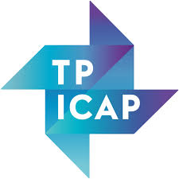

Kieran McKinney
Third Year Finance Student at the University of Dundee:
My name is Kieran McKinney, i'm a young finance professional with an analytical and data driven outlook, I am continuesly committed to broadening my skills and learning new things. I demonstrate these qualities both through my studies at the University of Dundee and independently.
Firstly, while studying for my modules I have also been persuing various extra-carricular activities to strenghten my analytical and problem-solving skills, on top of my leadership skills as I have lead teams through multiple types of challenges.
Secondly, outside of my course, I have committed to goals such as learning French, which I am proud to say that I am now conversational in. While learning more about the industry I am operating in, I have learned the importance that programming has in Finance, which has motivated me to delve into the world of computer science. This website, while primarily a vehicle to show the skills I have currated over the last few years, is also a representation of my skills thus far.
At A Glance:
Education:
- GCSE's:
- English Literature - A
- English Language - A
- Double Award Science - AB
- Maths - B
- Geography - B
- History - B
- Religious Studies - B
- Spanish - C
- A-Levels:
- Politics - A
- Economics - C
- History - C
- 112 UCAS Points
- Bachelor's Degree in Finance:
- 2:1/3.1GPA (Predicted)
Experience:
-

Accounts Payable Intern @ TP ICAP
In the summer proceeding my second year I had the amazing opportunity to intern at TP ICAP, the leading name in Inter-dealer Broking. During my placement I took on a lot of responsibilities within the AP team ranging from processing invoices and running payment batches worth up to £4 million, to dealing with expense queries from our team of brokers operating all over the EMEA region. This role taught me a lot about the importance of having a strong attention to detail which I have had to develop to prevent small mistakes slipping through that can have adverse consequences. Moreover, I have had the chance to spend a lot of time working independently and meeting my own deadlines, on top of working with the rest of the team, usually around the end of the month with large volumes of payment runs. This would mostly the form of going over rejected invoices and getting them resolved with suppliers to get them paid before they become overdue. On top of the valuable and transferrable experience I gained through the role itself, I also learned a lot about the corporate environment and felt I fit in very well, something I found very important as it has been my first role in a corporate office.
Overall, the internship was not only a valuable learning experience, but it was very enjoyable. Moreover, I am proud to say that I was offered to continue my experience next year and perhaps a permanent position after graduation.